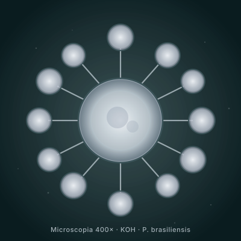

Diante de qualquer suspeita clínica de PCM, o primeiro passo diagnóstico é coletar material pra microscopia direta KOH.
Achar roda de leme = diagnóstico fechado. Sensibilidade 90-95% em material adequado, especificidade > 99%.
Microscopia direta com KOH = primeira linha de diagnóstico em qualquer suspeita de PCM. Busca-se a levedura com célula-mãe central + múltiplos brotamentos circunferenciais — aspecto inconfundível chamado "roda de leme" (ou "Mickey Mouse" em algumas referências). Achado fecha o diagnóstico com alta especificidade sem necessidade de exames sofisticados.
Diante de qualquer suspeita clínica de PCM, o primeiro passo diagnóstico é coletar material pra microscopia direta KOH.
Achar roda de leme = diagnóstico fechado. Sensibilidade 90-95% em material adequado, especificidade > 99%.

| Método | Material | Sensibilidade | Tempo | Quando usar |
|---|---|---|---|---|
| Microscopia KOH | Raspado de lesão / aspirado linfonodal / escarro / aspirado de medula | 90-95% | < 1 hora | 1ª linha em qualquer suspeita |
| Cultura | Mesmo material; Sabouraud + cicloheximida + cloranfenicol | 50-80% variável | 20-30 dias (até 40) | Microscopia negativa + alta suspeita; confirmação espécie |
| Histopatologia | Biópsia tecidual | 90-95% | 3-7 dias | Quando lesão pra biopsiar; confirma granulomatose crônica + fungo |
| Sorologia gp43 (ID dupla) | Soro | 85-90% | 2-3 dias | Apoio diagnóstico + monitorização |
| ELISA gp43 | Soro | 80-95% | 1-2 dias | Monitorização (quantificação de títulos) |
| PCR | Material clínico / cultura | > 95% | 1-3 dias | Centros de referência; distingue P. brasiliensis × P. lutzii |
Glicoproteína de 43 kDa secretada pela fase leveduriforme de P. brasiliensis. Alvo principal de imunodifusão dupla, ELISA e Western blot. Sensibilidade 80-95%, especificidade 90-100%. Limitação importante: gp43 de P. brasiliensis tem reatividade cruzada limitada com gp43 de P. lutzii → falso-negativo possível em casos de Centro-Oeste/Norte.
Roda de leme em microscopia direta = diagnóstico fechado de PCM.
Não há necessidade de exame mais sofisticado quando o achado é típico. A sorologia complementa pra monitorização terapêutica, mas a chave diagnóstica rápida é a microscopia.